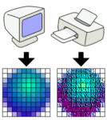
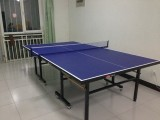
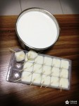
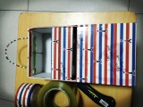

容芳志
昨天 18:49 来自网页157
昨天 20:44 来自网页(1)
8月20日 16:00 来自网页
8月20日 17:21 来自网页
8月9日 11:00 来自网页5
8月9日 15:24 来自网页

8月9日 14:56 来自网页5
8月9日 15:23 来自网页
6月18日 14:07 来自网页
6月17日 17:36 来自网页
6月17日 18:07 来自网页
6月17日 14:50 来自网页
6月7日 10:18 来自网页1
6月7日 11:09 来自网页
5月4日 12:29 来自网页4
6月6日 16:09 来自网页
6月4日 00:17 来自网页1
6月4日 10:25 来自网页

5月25日 20:37 来自网页
5月13日 13:33 来自网页(1)

5月10日 22:16 来自网页
5月11日 09:36 来自网页
5月4日 13:34 来自网页(3)
4月29日 08:44 来自网页
4月22日 22:51 来自网页1
4月23日 23:02 来自网页
4月22日 22:51 来自网页(1)

4月18日 22:38 来自网页1
4月21日 14:12 来自网页
4月17日 08:39 来自网页
4月16日 18:53 来自网页
4月16日 22:32 来自网页
啊
马强
百合
黎跃春